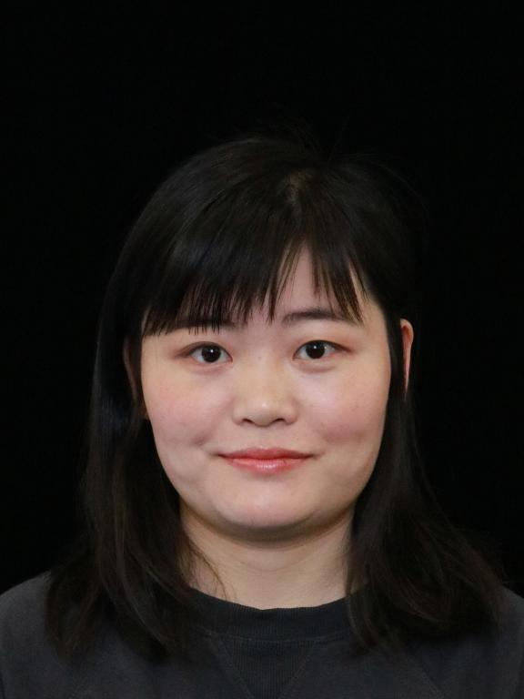
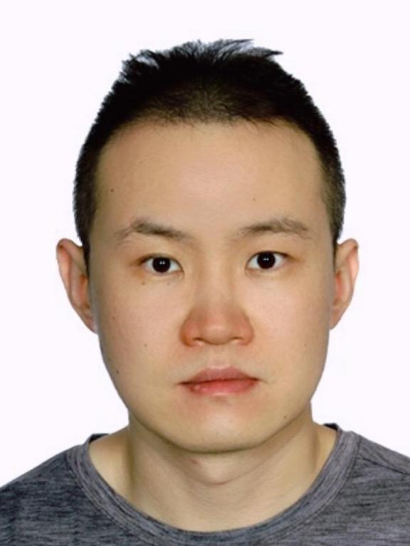

Organizers

Yarong Feng
Amazon

Qipin Chen
Amazon

Joe Liu
Amazon

Chenge Li
Amazon

Xiaonan Zhao
Amazon
Workshop Date: Mar 6 or Mar 7, 2026 (TBD)
Location: TBD
Held in conjunction with WACV2026
5th Workshop on Image/Video/Audio Quality Assessment in Computer Vision, VLM and Diffusion Model
Many machine learning tasks and computer vision algorithms are susceptible to image/video/audio quality artifacts. Nonetheless, most visual learning and vision systems assume high-quality image/video/audio as input. In reality, noises and distortions are common in image/video/audio capturing and acquisition process. Oftentimes, artifacts can be introduced in the video compression, transcoding, transmission, decoding, and/or rendering process. All of these quality issues play a critical role on the performance of learning algorithms, systems and applications, therefore could directly impact the customer experience.
This workshop addresses topics related to image/video/audio quality in machine learning, computer vision, and generative AI. The topics include, but are not limited to:
| Time | Event | Duration |
|---|---|---|
| 8:20-8:30am | Opening Remarks (Host: Joe Liu) | 10 mins |
| 8:30-9:30am | Keynote Keynote Speaker: Kevin Bowyer, "What makes a good quality face recognition training set?" (Host: Joe Liu) |
60 mins |
| 9:30-10:15am | Coffee Break | 45 mins |
| 10:15-11:15am | Oral Long Session I (Host: Yarong Feng) | 60 mins |
| 10:15-10:30am | DaBiT: Depth and Blur informed Transformer for Video Deblurring (in person) Presenter: Crispian Morris | 15 mins |
| 10:30-10:45am | Lights, Camera, Matching: The Role of Image Illumination in Fair Face Recognition (in person) Presenter: Gabriella Pangelinan | 15 mins |
| 10:45-11:00am | Quantifying Generative Stability: Mode Collapse Entropy Score for Mode Diversity Evaluation (in person) Presenter: Jens Duym | 15 mins |
| 11:00-11:15am | TE-NeRF: Triplane-Enhanced Neural Radiance Field for Artifact-Free Human Rendering (in person) Presenter: Sadia Mubashshira | 15 mins |
| 11:15-11:45am | Oral Short Session I (Host: Yarong Feng) | 30 mins |
| 11:15-11:20pm | LatentPS: Image Editing Using Latent Representations in Diffusion Models (online) Presenter: Zilong Wu | 5 mins |
| 11:20-11:25pm | IP-FaceDiff: Identity-Preserving Facial Video Editing with Diffusion (online) Presenter: Tharun Anand | 5 mins |
| 11:25-11:30pm | Advancing Super-Resolution in Neural Radiance Fields via Variational Diffusion Strategies (online) Presenter: Shrey Vishen | 5 mins |
| 11:30-11:35pm | Similarity Trajectories: Linking Sampling Process to Artifacts in Diffusion-Generated Images (online) Presenter: Dennis Menn | 5 mins |
| 11:35-11:40pm | A Distortion Aware Image Quality Assessment Model (online) Presenter: Ha Thu Nguyen | 5 mins |
| 11:40-11:45pm | SST-EM: Advanced Metrics for Evaluating Semantic, Spatial and Temporal Aspects in Video Editing (online) Presenter: Youshan Zhang | 5 mins |
| 11:45am-1:15pm | Lunch Break | 90 mins |
| 1:15-2:00pm | Oral Long Session II (Host: Qipin Chen) | 45 mins |
| 1:15-1:30pm | Unsupervised Generative Approach for Anomaly Detection to Enhance the Quality of Unseen Medical Datasets (in person) Presenter: Zhemin Zhang | 15 mins |
| 1:30-1:45pm | Sparse Mixture-of-Experts for Non-Uniform Noise Reduction in MRI Images (in person) Presenter: Zeyun Deng | 15 mins |
| 1:45-2:00pm | HipyrNet: Hypernet-Guided Feature Pyramid network for mixed-exposure correction (in person) Presenter: Aravind Shenoy | 15 mins |
| 2:00-2:15pm | Challenge Introduction (Host: Xiaonan Zhao) | 15 mins |
| 2:15-3:00pm | Oral Long Session III (Host: Qipin Chen) | 45 mins |
| 2:15-2:30pm | Temporally Streaming Audio-Visual Synchronization for Real-World Videos (in person) Presenter: Jordan Voas | 15 mins |
| 2:30-2:45pm | MambaTron: Efficient Cross-Modal Point Cloud Enhancement using Aggregate Selective State Space Modeling (in person) Presenter: Sai Tarun Inaganti | 15 mins |
| 2:45-3:00pm | Diffusion Prism: Enhancing Diversity and Morphology Consistency in Mask-to-Image Diffusion (in person) Presenter: Hao Wang | 15 mins |
| 3:00-3:45pm | Coffee Break | 45 mins |
| 3:45-4:20pm | Oral Short Session II (Host: Joe Liu) | 35 mins |
| 3:45-3:50pm | Mahalanobis k-NN: A Statistical Lens for Robust Point-Cloud Registrations (in person) Presenter: Tejas Anvekar | 5 mins |
| 3:50-3:55pm | Improving Human Pose-Conditioned Generation: Fine-tuning ControlNet Models with Reinforcement Learning (online) Presenter: Jeonghwan Lee | 5 mins |
| 3:55-4:00pm | PQD: POST-TRAINING QUANTIZATION FOR EFFICIENT DIFFUSION MODELS (online) Presenter: Jiaojiao Ye | 5 mins |
| 4:00-4:05pm | High-Fidelity 4x Neural Reconstruction of Real-time Path Traced Images (in person) Presenter: Zhiqiang Lao | 5 mins |
| 4:05-4:10pm | Confident Pseudo-labeled Diffusion Augmentation for Canine Cardiomegaly Detection (online) Presenter: Youshan Zhang | 5 mins |
| 4:10-4:15pm | Revealing Palimpsests with Latent Diffusion Models: A Generative Approach to Image Inpainting and Handwriting Reconstruction (in person) Presenter: Mahdi Champour | 5 mins |
| 4:15-4:20pm | LS-GAN: Human Motion Synthesis with Latent-space GANs (in person) Presenter: Avinash Amballa | 5 mins |
| 4:20-4:30pm | Closing Remarks (Host: Joe Liu) | 10 mins |
| 4:30-5:30pm | Poster Session | 60 mins |
| Zoom Information for virtual presentations: |
|
Topic: VAQ Workshop - WACV2025 Time: Feb 28, 2025 08:15 AM Join Zoom Meeting https://us06web.zoom.us/j/82700199161?pwd=SOAhhH2uWedGxcxvjn2vqRQD8tJmDW.1 |
Abstract: This talk will start with comments on web-scraped, in-the-wild training sets. And possibly also on CVPR and FG reviewing. Then we will touch on the “identity problem” in training sets of images of persons who don’t exist. Lastly, we will describe an example of a training set with targeted synthetic enhancements as a means of training set augmentation to solve a specific problem. This talk should be entertaining and informative for a broad audience.
Bio: Kevin Bowyer is the Schubmehl-Prein Family Professor of Computer Science and Engineering at the University of Notre Dame. He is a Fellow of the AAAS, IEEE and IAPR, past EIC of the IEEE Transactions on Pattern Analysis and Machine Intelligence and the IEEE Transactions on Biometrics, Behavior, and Identity Science, recipient of a Technical Achievement Award from the IEEE Computer Society, and of the Meritorious Service Award and the Leadership Award from the IEEE Biometrics Council.
Amazon
Amazon
Amazon
Amazon
Amazon
TBD
If you have any questions or inquiries, please contact us at wacv2025-image-quality-workshop2@amazon.com.